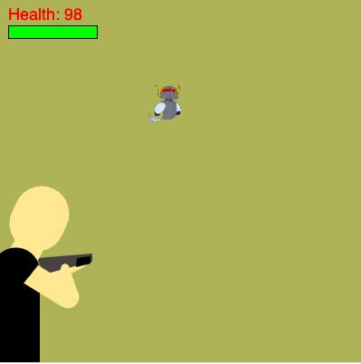

| |
|
|
|
|
Thank you for visiting my final project page. For my final project in CSC 106 my partner and I decided to create a third person shooter styled game. The main concept of our game is to defeat the enemy by lowering its health until it hits zero. As the enemies health gets lower the bar that displays it turns from green, to yellow, to red to indicate game progress. The playable character is controlled by the users mouse. An end screen thanking the user is shown at the end once the enemy is defeated indicating that the game has ended. The enemy is also designed to get faster or "aggrivated" as its health decreases.
You can play our game for yourself by clicking here hereIf you you need further instruction, you can watch a video on how to play here.